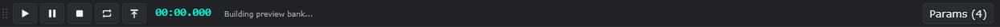

Capítulo 12 — Glossário Unificado A–Z e Cola de Atalhos
Consulta rápida de todos os termos de áudio, controles do OpenAudio Studio.exe e conceitos do pacote
com.openaudio.core da Unity.
Glossário de A a Z
| Termo | Significado | Onde aprender |
|---|---|---|
| AHDSR | Envelope de 5 estágios (Attack, Hold, Decay, Sustain, Release) que molda o volume de um som no tempo. | Cap. 6 |
| Async | Opção do clipe pela qual a voz disparada pode avançar independentemente do cursor da Timeline. Combine com loop e lógica de sustentação quando precisar aguardar Key Off. | Cap. 11 — Async |
Bank (.bank) | Arquivo binário compilado contendo eventos, mixer e áudios empacotados para o jogo. | Cap. 2 |
| BPM | Batidas Por Minuto — velocidade rítmica de uma música. | Cap. 7 |
| Breadcrumbs | Trilha de navegação hierárquica no topo da Timeline para transitar entre eventos pais e sub-eventos filhos. | Cap. 5 |
| Built-in Parameters | Parâmetros 3D automáticos calculados pelo motor em tempo real (Distance, Direction, Elevation, EventConeAngle, Speed). | Cap. 9 |
Bus (bus:/) | Canal que recebe, soma e encaminha sinais. Pode aplicar ganho e efeitos à mistura. | Barramentos |
Catalog (.bank.catalog.json) | Índice JSON gerado junto ao .bank com lista de eventos e CRC-32 para a Unity. | Cap. 8 |
| Command Instrument | Clipe que agenda disparo ou parada de evento e ativação ou desativação de snapshot. O Inspector apresenta os campos Command Type e Command Target. | Cap. 11 — exemplo com recursos distribuídos |
| Cooldown | Tempo mínimo de espera (em ms) antes de permitir outro disparo do mesmo evento. | Cap. 6 |
| CRC-32 | Código calculado a partir dos bytes. A comparação ajuda a detectar divergência entre banco e catálogo. | Cap. 2 |
| Decibel (dB) | Unidade logarítmica de relação. Ganho de 0 dB multiplica a amplitude por 1. Na conversão de ganho do motor, -80 dB corresponde a zero. | Cap. 0 |
| Ducking (Sidechain) | Abaixar automaticamente o volume de um Bus (ex.: música) quando outro Bus (ex.: voz) toca. | Cap. 7 |
Evento (event:/) | Unidade jogável que combina faixas, clipes, regras e parâmetros. | Cap. 0 |
[EventRef] | Atributo C# da Unity que transforma um campo de texto em campo de caminho com menu de eventos em Browse…. | Cap. 9 |
| Fade In / Fade Out | Aumento ou redução gradual de volume no início ou no fim de um som. | Cap. 5 |
| Key Off | Comando que libera a sustentação e permite que o evento continue a partir do Sustain Point; o envelope pode executar seu release. | Cap. 11 — Async, Sustain Point e Key Off |
| Live-Linking | Conexão TCP (porta 7450) entre Studio e Unity para mixar ao vivo enquanto o jogo roda. | Cap. 10 |
| Lock Inspector | Trava a seleção atual no painel Inspector, permitindo navegar na Timeline sem desviar a inspeção do item congelado. | Cap. 6 |
| Master Bank | Banco principal que contém toda a árvore de Buses e efeitos do Mixer. | Cap. 2 |
| Multi Instrument | Instrumento que seleciona uma entrada de sample ou evento da playlist conforme o modo de reprodução e seus pesos. | Cap. 7 — Playlist |
| Pan | Distribuição do som entre o canal esquerdo (L) e direito (R). | Cap. 0 |
Parameter Sheet (PSHT) | Vínculo de um instrumento a um parâmetro e subintervalo, configurado pelo Inspector em Trigger Sheet, Sheet Min e Sheet Max. | Cap. 5 — Trigger Sheet |
| Trigger Sheet | Seletor de parâmetro local ou global ao qual o instrumento será vinculado. Sheet Min e Sheet Max definem os limites inclusivos. | Cap. 6 — Inspector |
| Pitch (st) | Afinação/velocidade medida em semitons. | Cap. 0 |
| PMOD | Modificador de parâmetro embutido (ex.: sensibilidade velocity ou trava hold_during_playback). | Cap. 6 |
| Quantização | Alinhamento de uma transição musical para o próximo BEAT ou BAR (compasso). | Cap. 7 |
| Sample | Áudio de origem identificado no projeto. Em Audio Assets, veja o caminho em File. | Cap. 4 |
| Scatterer | Instrumento que dispara entradas da playlist em intervalos aleatórios, limitado por total e polifonia e com faixa de distância configurável. | Cap. 7 — Playlist |
| Snap | Imã magnético na timeline que alinha clipes em segundos ou batidas musicais. | Cap. 5 |
Snapshot (snapshot:/) | Predefinição temporária de mixagem (ex.: abafar o jogo na tela de pausa). | Cap. 4 |
| Sound Size | Raio aparente da fonte acústica para envolvimento estéreo (envelopment) ao se aproximar. | Cap. 9 |
| Steal Mode | Política de substituição ao atingir o limite de instâncias de um evento (OLDEST, QUIETEST, NONE). | Cap. 6 |
| Swatches de Cor | Paleta de 16 cores para personalização visual e categorização rápida de pistas da timeline. | Cap. 5 |
VCA (vca:/) | Voltage-Controlled Amplifier. Multiplicador de ganho para barramentos associados. Preserva os faders e as rotas. | VCAs |
| Waveform | Representação gráfica poligonal da amplitude da onda sonora ao longo do tempo. | Cap. 5 |
Termos para acompanhar a mixagem
- Bus Route
- Destino do áudio de um evento. Veja a rota da moeda.
- Fader
- Controle de ganho de um canal ou grupo.
- Headroom
- Margem entre o pico observado e o limite digital.
- Insert
- Efeito colocado no caminho do canal.
- Parent
- Barramento que recebe a saída de um barramento filho.
- RMS
- Medida da energia do sinal em uma janela. Ajuda a distinguir um pico breve de um som sustentado.
- Send e return
- Envio paralelo e canal que o recebe. Veja o exemplo de retorno.
- Wet e dry
- Contribuições processada e direta do sinal.
Atalhos do OpenAudio Studio

| Atalho | Função |
|---|---|
| F1 | Abrir o manual offline |
| Ctrl + N | Criar projeto na pasta escolhida |
| Ctrl + O | Abrir um arquivo de autoria |
| Ctrl + S | Salvar a autoria |
| Ctrl + B | Publicar banco e catálogo |
| Espaço | Iniciar ou pausar a audição |
| Ctrl + Z | Desfazer (Undo — até 100 passos) |
| Ctrl + Y | Refazer (Redo) |
| F2 | Renomear item selecionado no navegador (com atualização em cascata) |
| Ctrl + D | Duplicar item selecionado |
| Del | Excluir item selecionado |
| Ctrl + ` | Ocultar ou restaurar todos os painéis secundários (Stage Focus / Maximize Timeline) |
| Shift + Arraste | Ajuste fino de sliders e faders (sensibilidade reduzida em 10x: 0.1 dB / 0.1 st) |
| Duplo-clique em Slider | Restaurar controle para o valor padrão (Default) com registro no histórico de Undo |
Duplo-clique em [EVT] | Navegar para o sub-evento na Timeline através da barra de Breadcrumbs |
| Esc | Fechar imagem ampliada / cancelar edição |